| Publications: |
-
F. Kulwa, C. Li, M. Grzegorzek, M. M. Rahaman, K. Shirahama, S. Kosov:
"Segmentation of Weakly Visible Environmental Microorganism Images Using Pair-wise Deep Learning Features" [Paper] [Bibtex] [Data]
Biomedical Signal Processing and Control
Volume 79, Part 2, January 2023
2023
|
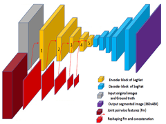 |
|
|
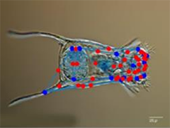 |
-
J. Zhang, C. Li, S. Kosov, M. Grzegorzek, K. Shirahama, T. Jiang, C. Sun, Z. Li, H. Li:
"LCU-Net: A Novel Low-Cost U-Net for Environmental Microorganism Image Segmentation" [Paper] [Bibtex]
Pattern Recognition
Volume 115, July 2021
2021
|
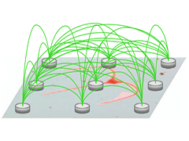 |
|
|
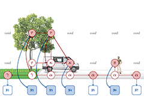 |
-
S. Kosov, K. Shirahama, C. Li, M. Grzegorzek:
"Environmental Microorganism Classification Using Conditional Random Fields and Deep Convolutional Neural Networks" [Paper] [Bibtex] [Data]
Pattern Recognition
Volume 77, May 2018
2018
|
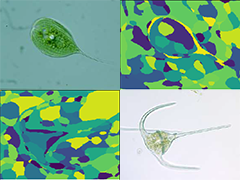 |
-
A. C. Braun, C. Rojas, C. Echeverri, F. Rottensteiner, H.-P. Bähr, J. Niemeyer, M. A. Arias, S. Kosov, S. Hinz, U. Weidner:
"Design of a Spectral-Spatial Pattern Recognition Framework for Risk Assessments Using Landsat Data - A Case Study in Chile" [Paper] [Bibtex]
IEEE Journal of Selected Topics in Applied Earth Observations and Remote Sensing
Volume 7, March 2014
2014
|
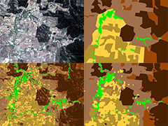 |
|
|
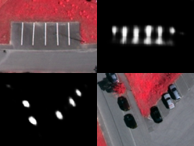 |
-
S. Kosov, F. Rottensteiner, C. Heipke:
"Sequential Gaussian Mixture Models for Two-Level Conditional Random Fields" [Paper] [Bibtex] [Poster] [Data]
35th German Conference on Pattern Recognition (GCPR 2013)
Saarbrücken, Germany, September 2013
2013
|
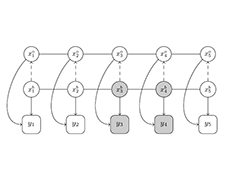 |
-
S. Kosov, F. Rottensteiner, C. Heipke:
"3D Classification of Crossroads from Multiple Aerial Images Using Conditional Random Fields" [Paper] [Bibtex] [Presentation] [Data]
Pattern Recognition in Remote Sensing (PRRS 2012)
Tsukuba Science City, Japan, November 2012
2012
|
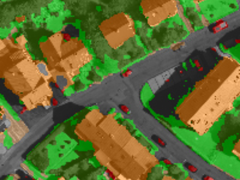 |
-
S. Kosov, F. Rottensteiner, C. Heipke, J. Leitloff, S. Hinz:
"3D Classification of Crossroads from Multiple Aerial Images Using Markov Random Fields" [Paper] [Bibtex] [ePoster] [Data]
The XXII Congress of the International Society for Photogrammetry and Remote Sensing (ISPRS 2012)
Melbourne, Australia, August 2012
2012
|
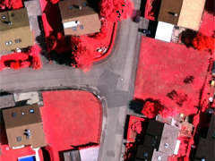 |
-
S. Kosov, T. Thormählen, H.-P. Seidel:
"Using Active Illumination for Accurate Variational Space-Time Stereo" [Paper] [Bibtex] [Video] [Poster] [Data]
Scandinavian Conference on Image Analysis (SCIA 2011)
Ystad, Sweden, May 2011
2011
|
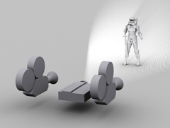 |
-
S. Kosov, T. Thormählen, H.-P. Seidel:
"Rapid Stereo-Vision Enhanced Face Recognition" [Paper] [Bibtex] [Video] [Presentation] [Data]
IEEE International Conference on Image Processing (ICIP 2010)
Hong Kong, China, September 2010
2010
|
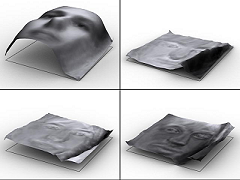 |
-
S. Kosov, T. Thormählen, H.-P. Seidel:
"Accurate Real-Time Disparity Estimation with Variational Methods" [Paper] [Bibtex] [Presentation]
5th International Symposium on Visual Computing (ISVC 2009)
Vegas, USA, November 2009
2009
|
 |
-
S. Kosov, K. Scherbaum, K. Faber, T. Thormählen, H.-P. Seidel:
"Rapid Stereo-Vision Enhanced Face Detection" [Paper] [Bibtex] [Poster] [Data]
IEEE International Conference on Image Processing (ICIP 2009)
Cairo, Egypt, November, 2009
2009
|
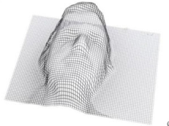 |
-
A. Bulavinov, S. Kosov, M. Kröning, R. Pinchuk, S. Pudovikov, S. V. Ramanan, K. M. Reddy, O. Jastribava, Y. Zhantlesov:
"Die getaktete Gruppenstrahlertechnik und ihre Anwendungen" [Paper] [Bibtex]
Seminar "Moderne Systemtechnik bei Prüfungen mit Ultraschall" des Fachausschusses "Ultraschall" der DGZfP
Wuppertal, Germany, November, 2007
2007
|
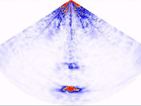 |
|
| Awards: |
- Teacher of The Year Award, Bremen, Jacobs Universit, 2020
- Best Poster prize, Manchester, British Machine Vision Association, the first place, 2012
- Rendering Competition, Saarbrücken, University of Saarland, the first place, 2006
- The best scientific paper, Bishkek, Kyrgyz-Russian Slavic University, the second degree, 2004
- MasterSoft competition, Bishkek, International Ataturk-Alatoo University, the second place, 2003
|